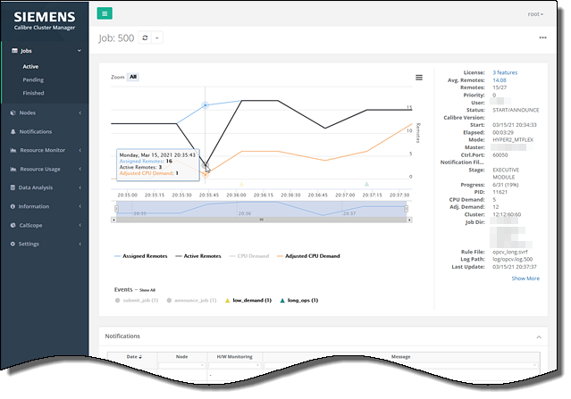
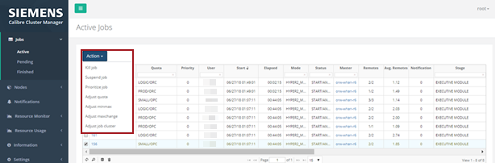

Executing Calibre Jobs to Run Under CalCM with the Dashboard
Prerequisites
The CalCM daemon (calcmd) and CalCM dashboard web application must be running as described in “Starting the CalCM Daemon”.
Jobs should be configured as described in “Configuring Calibre Jobs to Run Under CalCM”.
Browser access to the CalCM dashboard web application.
Note:The CalCM dashboard displays a web login page requesting authentication information (user name and password). Some menus and actionable items are only accessible at certain user levels. For information on user authentication in the CalCM dashboard, see “Accessing and Updating Settings in the CalCM Dashboard” and LDAP‑related configuration keywords in the calcm_http_server_app.tcl application.
Procedure
- Open a
browser and enter the server name on which the CalCM daemon is running
and the dashboard server port specified in the CalCM daemon configuration
file (calcmd.conf).
http://server_name:server_portThis displays the CalCM dashboard web application and defaults to the Active Jobs page in the Jobs menu item in the left pane.
Figure 1. Active Jobs
You can click a job number in the first column of the table to display the detailed information for a specific job in a plot format. In addition to information on the active and assigned remotes and CPU demand, this information can also include quota values and job notifications using JOBFILTERS in the calcm_notification_app.tcl application. Job events occurring during the run are shown at the bottom of the plot.
Figure 2. Job Detail PlotIf you select the check box next to the job number in the Active Jobs table, the Action filter is activated with a list of command actions for the active job. If multiple jobs are selected, the list displays only the applicable actions.
This requires you to be authenticated because you are only allowed to act on your own jobs. CalCM administrator logins can also be defined with permissions to act on all jobs. See Figure 3 for information on setting permission levels for different groups.
Figure 3. Job Action FilterThe available job actions and CalCM messaging commands are listed:
- Kill job
- Suspend job
- Prioritize job
- Adjust quota
- Adjust minmax
- Adjust maxchange
- Adjust job cluster
Results
You have reviewed the CalCM dashboard job web pages and executed two jobs to run under CalCM. The dashboard web application updates to display the status of the jobs.